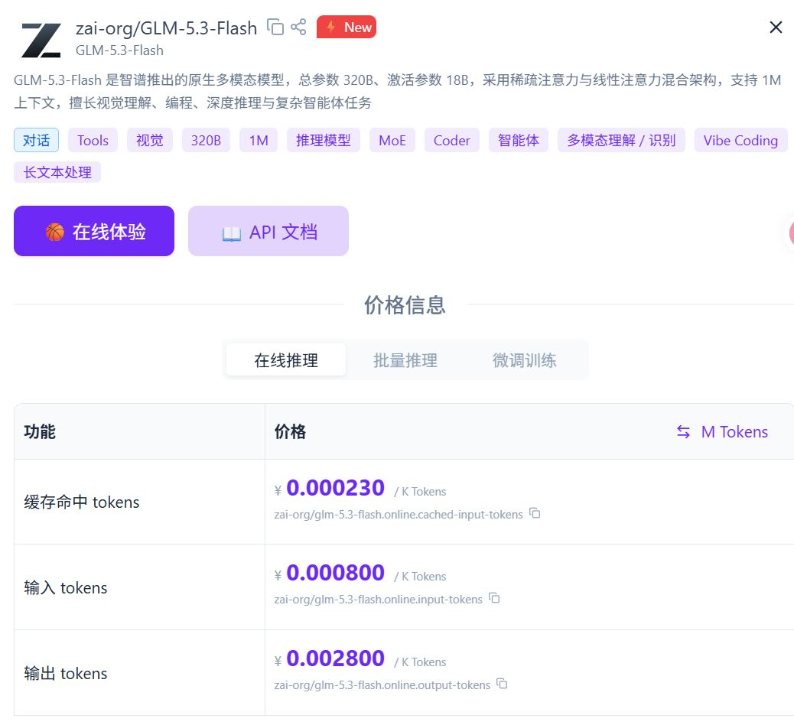
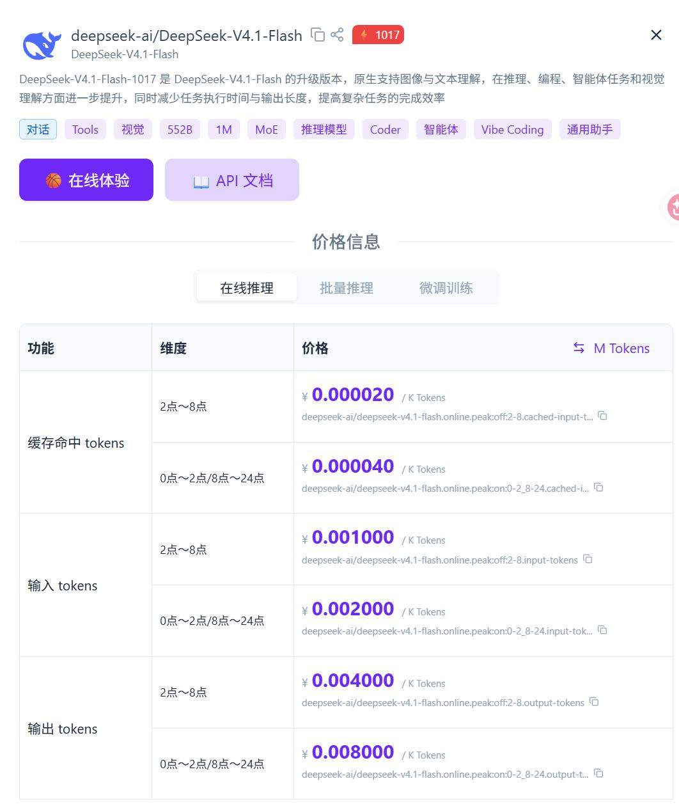
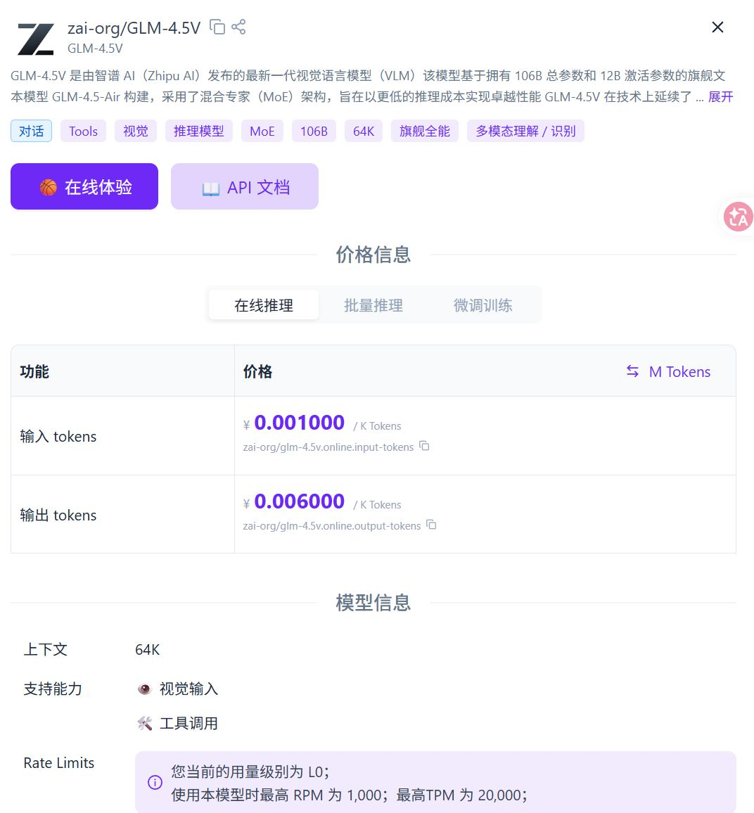
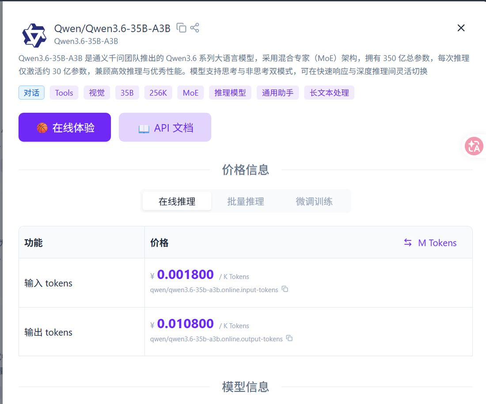

GLM-5.3-Flash 是当前性价比最优的通用选择：输入 ¥0.80 / 输出 ¥2.80 每百万 tokens，1M 上下文，原生多模态（视觉可用）。批量结构化、摘要、OCR、超长文档一律优先用它；需要更强推理或写代码的活放到凌晨 2–8 点走 DeepSeek-V4.1-Flash（半价时段）。
同名不同渠道能力不一致：硅基流动的 GLM-5.3-Flash 具备视觉能力；ZCode 编码套餐里的 GLM-5.3 无视觉，别混用。
本文价目就是它的实时价格。模型最全、认证送体验金，上面这套「GLM-5.3-Flash 优先」的选型直接能落地。
用我的邀请链接注册 →披露：链接含我的邀请码，你注册我可能得到奖励，你的价格与权益不变。
| 模型 | 输入 ¥/M | 输出 ¥/M | 缓存命中 ¥/M | 上下文 | 参数 | 状态 |
|---|---|---|---|---|---|---|
| GLM-5.3-Flash | 0.80 | 2.80 | 0.23 | 1M | 320B / 18B 激活 | 首选 |
| DeepSeek-V4.1-Flash | 1.00 / 2.00 | 4.00 / 8.00 | 0.02 / 0.04 | 1M | 552B MoE | 夜间深度推理 |
| GLM-4.5V | 1.00 | 6.00 | — | 64K | 106B / 12B | 已停用 |
| Qwen3.6-35B-A3B | 1.80 | 10.80 | — | 256K | 35B / 3B 激活 | 已停用 |
DeepSeek 为分时段价：前一个数 = 凌晨 2–8 点，后一个数 = 其余时段。
| 任务 | 模型 | 单条 token | 备注 |
|---|---|---|---|
| 文章条目结构化 | GLM-5.3-Flash | 约 4,600 | 折合约 ¥0.016 / 条 |
| 同任务对照 | Qwen3-VL-32B | 约 690 | token 少但单价高，总价不占优 |
| 公众号图片 OCR | Qwen3-VL-32B → 已迁移 | 约 2,100 / 张 | 迁往 GLM-5.3-Flash |




视频 · 图片 · 音频 TTS · 语言模型，一站式 AI API 中转；价格亲民，适合批量跑图跑视频的日常使用。
用我的邀请链接注册 →披露：链接含我的邀请码，你注册我可能得到奖励，你的价格与权益不变。